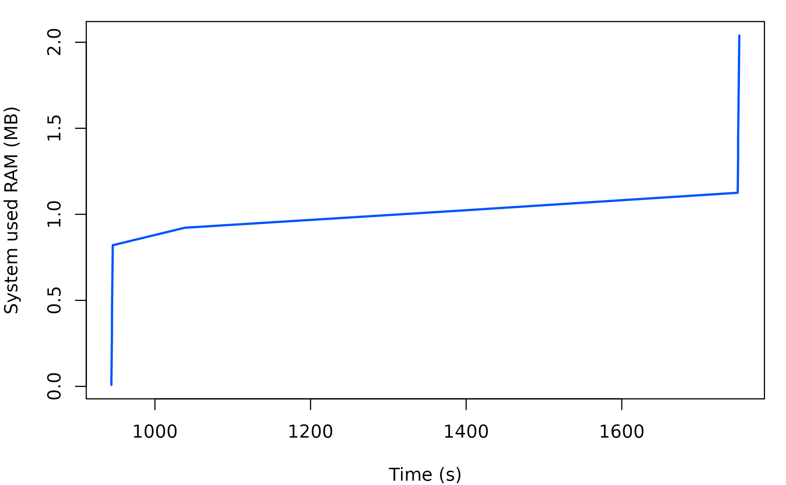

memprof.Rmd
library(memprof)memprof will evalute an R expression whilst profile the system memory usage over time.
Create you have a function you want to monitor the memory for e.g.
Profile it using memprof
memprof <- with_monitor(f("hello"))This will return an object with the result
memprof$result and the profiling data
memprof$memory_use. The memory_use data collected will
depend on the OS used, see ?ps::ps_system_memory for more
details.
head(memprof$memory_use)
#> time total avail percent used free active
#> 1 0.008756638 7281274880 6003646464 17.54677 944025600 2858663936 940941312
#> 2 0.109857798 7281274880 6003392512 17.55026 944279552 2858405888 940982272
#> 3 0.211389542 7281274880 6003134464 17.55380 944537600 2858147840 940982272
#> 4 0.312881947 7281274880 6002876416 17.55734 944795648 2857889792 940982272
#> 5 0.414445400 7281274880 6002876416 17.55734 944795648 2857889792 940982272
#> 6 0.515959024 7281274880 6002618368 17.56089 945053696 2857631744 940982272
#> inactive buffers cached shared slab
#> 1 2756714496 308592640 3169992704 7368704 574050304
#> 2 2757033984 308592640 3169996800 7368704 574050304
#> 3 2757279744 308592640 3169996800 7368704 574050304
#> 4 2757464064 308592640 3169996800 7368704 574050304
#> 5 2757709824 308592640 3169996800 7368704 574050304
#> 6 2757947392 308592640 3169996800 7368704 574050304The profile can be plotted
plot(memprof)
You can specify the file to write the memory usage logs to. You can use this to log memory usage of the system in a way which can be recovered if the expression you are evaluating might fail.
f <- function(msg) {
Sys.sleep(1)
z <- numeric(1e8) ## 800MB
Sys.sleep(1)
stop("An error")
msg
}
monitor_file <- tempfile()
tryCatch(with_monitor(f(), monitor_file = monitor_file),
error = function(e) e)
#> <simpleError in f(): An error>
memory_use <- monitor_read(monitor_file)
plot(memory_use)